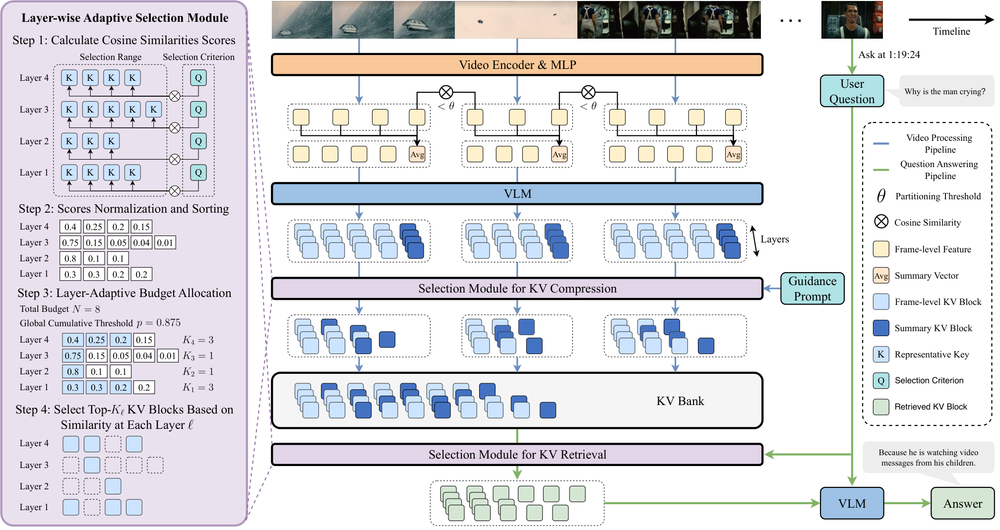
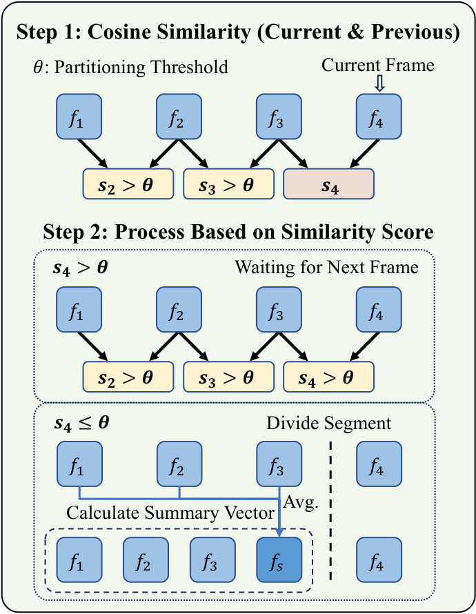
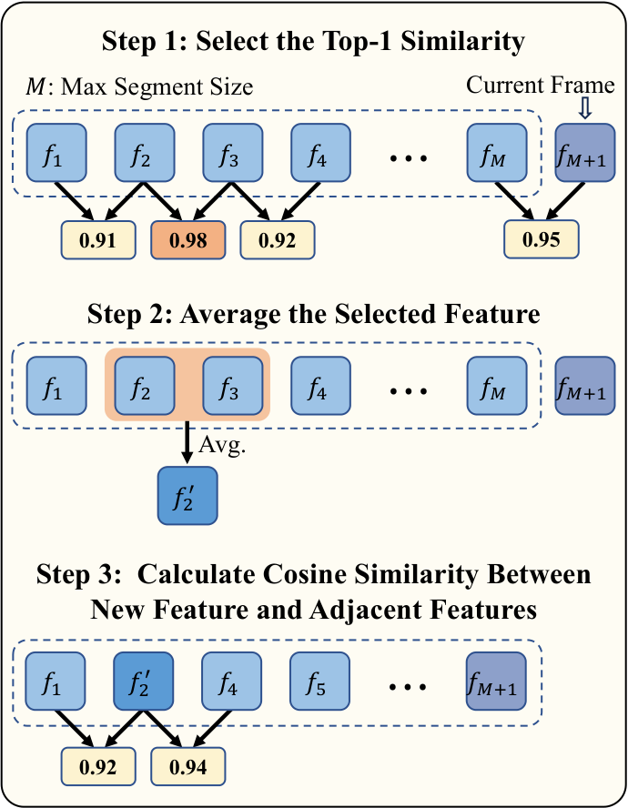
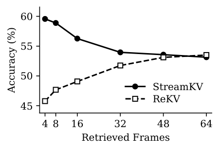
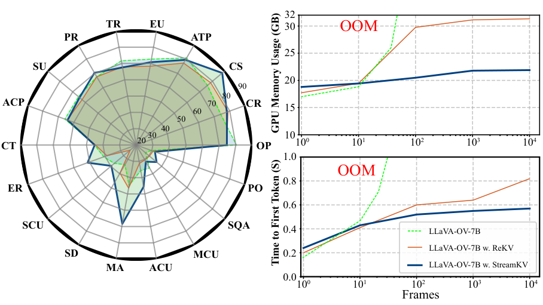

StreamKV
스트리밍 비디오에서 KV 캐시를 어떻게
압축하고 정밀하게 검색할 것인가.
13 min read · Video · LLM · Chen et al., 2025
오늘 다룰 흐름
Streaming VQA의 근본적 어려움부터, StreamKV의 세 가지 핵심 모듈까지.
- Streaming VQA오프라인 Video-LLM이 실시간에 맞지 않는 이유
- ReKV의 한계선행 연구가 남긴 세 가지 미해결 문제
- 전체 워크플로우StreamKV 파이프라인 한눈에 보기
- Semantic SegmentationCosine similarity 기반 동적 분할 + Summary Vector
- Layer-Adaptive KV SelectionCompression과 Retrieval을 통합한 핵심 알고리즘
- Compression · Retrieval · 결과Guidance Prompt, QA 생성, StreamingBench 실험
Streaming VQA가 어려운 이유
오프라인 Video-LLM은 전체 비디오를 한 번에 처리한다. 실시간 스트리밍 환경에서는 이 패러다임이 근본적으로 맞지 않는다.
- 끝없는 스트림: 비디오가 언제 끝날지 모른다. 전체 입력이 확정돼야 처리할 수 있는 오프라인 모델은 사용 불가.
- On-the-fly 질문: 사용자 질문은 임의 timestamp에 도달한다. "지금까지 본 것"만으로 즉시 답해야 한다.
- 메모리 선형 증가: 모든 프레임의 KV 캐시를 보존하면 비디오 길이 $T$에 비례해 GPU 메모리 증가 — 수천 프레임에서 OOM.
- 실제 응용: 자율주행, Embodied AI, AR 기기 — 모두 실시간 응답이 전제.
선행 연구 ReKV의 세 가지 한계
ReKV는 KV 캐시 retrieval을 도입한 첫 시도다. 그러나 분할 방식·메모리·retrieval 정밀도에서 미해결 문제를 남긴다.
| 문제 | ReKV | StreamKV (이 논문) |
|---|---|---|
| 비디오 분할 | Uniform partitioning — 씬 전환 중간에 경계가 생겨 semantic 구조 파괴 | Cosine similarity 기반 동적 분할 — semantic boundary를 실제로 탐지 |
| KV 저장 | 전체 KV 보존 — 메모리 $O(T)$, 수천 프레임에서 OOM | Guidance prompt로 즉시 압축 → 고정 메모리, 90% 압축도 정확도 유지 |
| Retrieval budget | 레이어별 균등 할당 — 정보 분포 무시, 중요한 레이어에 과소 배분 | Layer-adaptive allocation — similarity 분포 기반 binary search |
| 학습 필요 여부 | 추가 모듈 학습 필요 | Training-free — 기존 Video-LLM에 plug-and-play |
StreamKV 전체 워크플로우
Segment → Encode → Compress → Bank → Retrieve → Answer. 각 단계는 동일한 Unified Layer-Adaptive Selection Module로 처리된다.

Semantic Segment Partitioning
비디오를 균등하게 자르는 대신, 시각적으로 유사한 프레임끼리 하나의 세그먼트로 묶는다. 씬 전환 지점을 실제로 탐지한다.

Segment Merging & Sliding-Window Encoding
세그먼트가 $M=64$ 프레임을 초과하면 가장 유사한 인접 쌍을 병합해 길이를 줄인다. 비디오의 temporal redundancy를 활용한다.

Unified Layer-Adaptive KV Selection
Compression과 Retrieval을 동일한 함수 SelectKV로 통합. 레이어마다 similarity 분포가 다르므로, budget을 균등 배분하지 않고 분포 형태에 따라 적응적으로 배분한다.
KV Compression via Guidance Prompt
스트리밍 환경에서 압축 시점에 사용자 질문은 알 수 없다. query-agnostic이면서도 semantically-rich한 압축이 필요하다.
- Salient entities: 사람, 사물, 장소, 핵심 시각 개념
- Key events & actions: 무엇이, 언제, 어디서 일어났는가
- Temporal & causal: 사건 전개 순서, 인과 관계 체인
- Contextual cues: 씬 전환, 대화, 내러티브 변화
- Numerical & factual: 카운팅, 요약, fact-based QA를 위한 수치
KV Retrieval & Question Answering
질문이 도착하면 동일한 SelectKV로 KV Bank에서 관련 블록을 검색한다. StreamKV는 8 frames만으로 정점에 달한다 — ReKV와 정반대 패턴.

실험: StreamingBench 결과
18개 subtask, 3개 카테고리 (Real-Time · Omni-Source · Contextual). 동일 base model LLaVA-OV-7B 기준 비교.

Ablation Studies
세 가지 핵심 설계를 각각 제거/교체하여 기여도를 검증. StreamingBench overall score 기준 (↓ = 압축률, ✓ = 최종 StreamKV 설정).
| 컴포넌트 | 설정 | ↓60% | ↓80% | ↓90% |
|---|---|---|---|---|
| Partitioning | Uniform (고정 길이) | 56.33 | 53.02 | 51.41 |
| Semantic ✓ | 58.89 | 57.43 | 56.72 | |
| Summary Vector | w/o summary | 56.21 | 54.65 | 53.85 |
| w/ summary ✓ | 58.89 | 57.43 | 56.72 | |
| KV Selection | Uniform + Uniform | 57.83 | 56.74 | 55.91 |
| Adaptive + Adaptive ✓ | 58.89 | 57.43 | 56.72 |
참고 문헌
더 깊이 보고 싶다면.
- Chen et al. StreamKV: Streaming Video Question-Answering with Segment-based KV Cache Retrieval and Compression. AAAI 2026. github.com/sou1p0wer/StreamKV
- Di et al. ReKV: Training-Free Key-Value Cache Compression for Streaming Video QA. 2025.
- Lin et al. StreamingBench: Assessing the Gap for MLLMs to Achieve Streaming Video Understanding. 2024. arXiv:2411.03628
- Li et al. LLaVA-OneVision: Easy Visual Task Transfer. 2024. — StreamKV의 base model (LLaVA-OV-7B).
- Han et al. LM-Infinite: Simple On-the-Fly Length Generalization for Large Language Models. ACL 2024. — Local-window RoPE 방식.
- 이미지 출처 — 논문 figures: Chen et al. (AAAI 2026). All Rights Reserved.